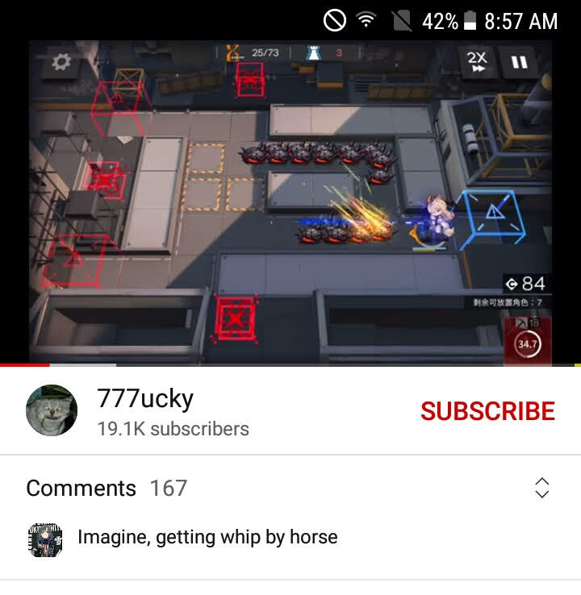

Conclusion
Arknights is probably overall one of the best mobile games gameplay-wise.
(It's also free and happens to satisfy my childhood pastime of tower defense).
Voice acting is great with a strong cast of Japanese voice actors. English, Chinese, and Italian voices are also being added into the game bit by bit.
While rate-up may or may not be a lie, the rates are usually fair (I think there is probably some internal balancing to eventually even out the odds if you are very unlucky).
As a smaller franchise, I think Arknights successfully manages to embrace the idea of an international community, missing some of the controversies surrounding Genshin Impact. Nobody is ever perfect, but one of the core themes of the story is acceptance, which helps to build a supportive fanbase.
I don't know if I've actually left the game for good, but I think I'll always be a part of the community.